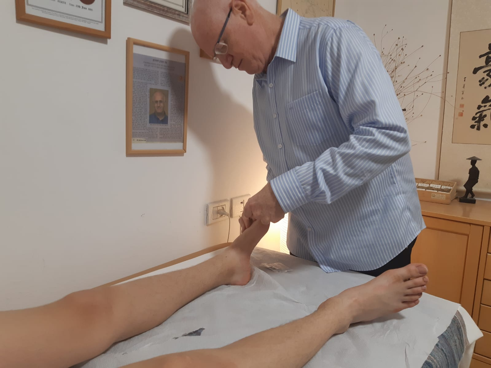
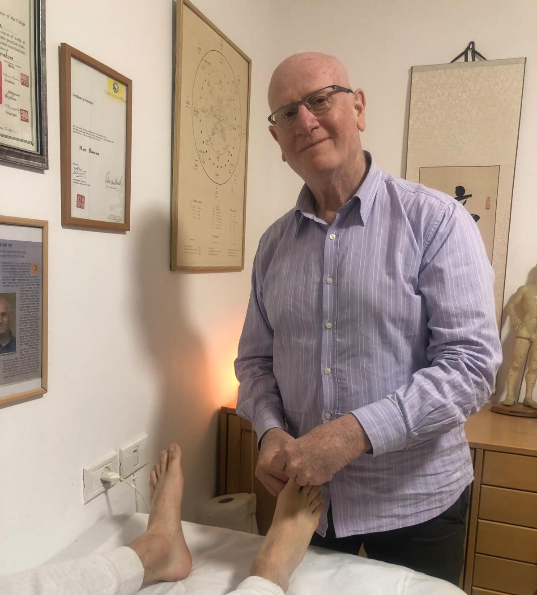

כאב שלא עובר
כאבי גב, צוואר וכתפיים. כאבי ראש ומיגרנות. כאבים כרוניים במפרקים.
- גם אחרי תרופות ופיזיותרפיה — התחושה נשארת?
- הגוף שלך מנסה לומר משהו
- טיפול בשורש הבעיה ולא רק בסימפטום
מענה אישי · בלי התחייבות
רון סמרה, 35+ שנות ניסיון ברפואה סינית מסורתית. טיפול אישי, קשוב ומדויק לכאב, סטרס, שינה וחוסר איזון — עם גישה שמחפשת את השורש, לא רק את הסימפטום.
טיפול טוב מתחיל בהקשבה
אני רון סמרה, מטפל ברפואה סינית עם ניסיון של מעל 35 שנה. לאורך השנים ליוויתי מטופלים רבים עם כאב, סטרס, בעיות שינה וחוסר איזון.
מענה אישי · בלי התחייבות
אם כבר ניסית פתרונות ועדיין משהו לא הסתדר, ייתכן שהגוף שלך צריך גישה אחרת.
לאנשים שסבלו מספיק, שלא מוכנים להמשיך לחיות עם הכאב — ומוכנים לשנות.
לפעמים דרך כאב, עייפות או מתח. לא תמיד יש לזה מענה ברור, ולא תמיד הפתרונות הרגילים מספיקים.
כאן הרפואה הסינית נכנסת לתמונה — ומקשיבה למה שהגוף מנסה לומר.
כאבי גב, צוואר וכתפיים. כאבי ראש ומיגרנות. כאבים כרוניים במפרקים.
מענה אישי · בלי התחייבות
מתח שלא עוזב, חרדה ותחושת לחץ מתמשך. עומס במחשבות ועייפות כרונית.
מענה אישי · בלי התחייבות
קשה להירדם, מתעוררים באמצע הלילה, קמים עייפים.
מענה אישי · בלי התחייבות
מזהים את עצמכם?
אפשר לתאר בקצרה מה עובר עליך, ונבדוק יחד אם הטיפול מתאים לך.
💬 רוצה לבדוק אם זה מתאים?הטיפול מתחיל בהקשבה. להבין מה הגוף עובר, ומה הוא מנסה לומר. משם — טיפול עדין ומדויק, שמכוון להחזיר איזון וזרימה.
שיחה קצרה והבנה של מה שעובר עליך. מסתכלים על התמונה המלאה, לא רק על הסימפטום.
הדיקור נעשה בעדינות ובהתאמה אישית, במטרה להחזיר זרימה ואיזון. רוב המטופלים חווים טיפול רגוע ונעים.
הגוף מתחיל להגיב — הפחתת סימפטומים ותחושה כללית טובה יותר. לעיתים ניתן להרגיש שינוי כבר אחרי מספר טיפולים.
מטופלים רבים מדווחים על שיפור לאחר 2–3 טיפולים. בבעיות חדשות — לעיתים כבר מהטיפול הראשון.
מטפל בכיר ברפואה סינית. טיפל באלפי מטופלים עם כאבים כרוניים, מתח ובעיות שינה.
למד 4 שנים בקולג' הבינלאומי לרפואה סינית בלונדון (I.C.O.M). נשאר עוד 3 שנים כמנחה קליני.
חזר לישראל וטיפל ברפואה סינית מאז. עובד עם קופת חולים כללית משלימה.
מרצה באוניברסיטה העברית. מנהל קליניקה פרטית במודיעין.

"אני לא מטפל בסימפטום. אני מחפש את הסיבה ומטפל בה. ככה מגיעים לתוצאה אמיתית."
— רון סמרה
חדר טיפולים שקט ונקי. ציוד חד-פעמי בלבד. פרטיות מלאה.




לא בטוחים אם זה מתאים? שלחו הודעה — רון בדרך כלל מחזיר תוך שעה. ללא התחייבות.
💬 אפשר להתייעץ בלי התחייבות
"הגעתי במצב קשה של פציאליס ובמצב נפשי ירוד. הצלחת, אחרי חודש ימים בלבד, להביאני למצב בריא. הטיפול הוריד לי מפעם לפעם את רף החרדה. אתה כישרון אמיתי."
"סבלתי שנים מאסטמה וקוצר נשימה. תוך כמה מפגשים חשתי בהבדל. רון לימד אותי לנשום נכון ועזר לי לשנות הרגלי אכילה. מאז השתמשתי פעמים ספורות בלבד במשאף."
"סבלתי מכאבי בטן חריפים בשל בקע סרעפתי. לאחר שטיפולים תרופתיים לא הועילו, פניתי לרון. לאחר מספר טיפולים חשתי הקלה ניכרת. אני נמצאת היום במצב טוב בהרבה."
הודעה קצרה בוואטסאפ. רון בדרך כלל מחזיר תוך שעה. בלי טפסים.
60–75 דקות. אבחון מלא + תוכנית טיפול + טיפול ראשון בפועל.
טיפולים שבועיים מותאמים אישית. כל טיפול מבוסס על תגובת הגוף שלך.
מטופלים רבים מדווחים על שיפור לאחר 2–3 טיפולים. בעיות קלות — בדרך כלל 3–5 טיפולים. כרוניות — 6–10.
בדרך כלל לא. המחטים דקות מאוד — רוב המטופלים כמעט לא מרגישים אותן. ייתכן עקצוץ קל. רוב האנשים נרגעים במהלך הטיפול.
בעיות חדשות: בדרך כלל 3–5 טיפולים. בעיות כרוניות: בדרך כלל 6–10 טיפולים. בטיפול הראשון תקבלו תוכנית טיפול מוצעת עם מספר טיפולים משוער.
מטופלים רבים מדווחים על שיפור תוך 1–3 טיפולים. בבעיות ותיקות השיפור נוטה להיות הדרגתי יותר. התוצאות משתנות מאדם לאדם.
כן. רפואה סינית משלימה את הטיפול הרפואי הרגיל, לא מחליפה אותו. חשוב לעדכן את הרופא שלך.
אבחון מלא, תשאול רפואי, תוכנית טיפול אישית, וטיפול דיקור ראשון בפועל. 60–75 דקות.
אפשר להתחיל בהתייעצות קצרה ללא התחייבות
חבילות לחיסכון כספי ולתוצאות טובות יותר
שלח הודעה ואבדוק יחד איתך איך אפשר לעזור.
💬 נדבר רגע ונבדוק התאמהמענה אישי · בלי התחייבות
⚠️ הטיפולים אינם תחליף לייעוץ רפואי. יש להיוועץ ברופא. ביטול — עד 24 שעות מראש.
רון סמרה מחזיק בתעודת מטפל מוסמך ברפואה סינית BAc. Lic. Ac ואינו רופא MD. המידע באתר אינו מיועד לשמש כהמלצה רפואית. תוצאות הטיפול משתנות מאדם לאדם ודורשות עקביות.